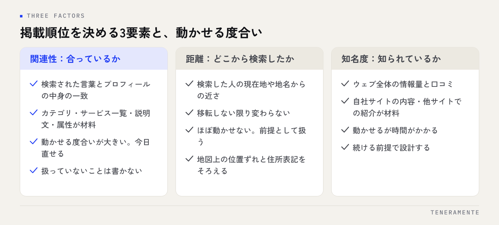

「近くの〇〇」で検索したときに、なぜあの店が上に出て自店は出ないのか。Googleマップの掲載順位は、関連性・距離・知名度という3つの要素の組み合わせで決まります。Google 自身がこの考え方を公開しており、順位を上げる作業は、3つのうち自分で動かせる部分に手を入れることに尽きます。投稿の回数を増やす前に、どの要素が足りていないのかを見分けてください。
📌 この記事の結論
掲載順位は3要素の総合で決まり、どれか1つを満点にして上がるものではありません。自分で動かせる度合いがいちばん大きいのは関連性で、距離はほぼ動かせません。関連性を先に埋め、知名度を時間をかけて積む。この順番が結果として最短になります。
01Googleマップの掲載順位を決める3つの要素
Google はローカル検索の結果の並び方について、関連性・距離・知名度の3つをもとにしていると説明しています。検索された言葉と店舗の情報がどれだけ合っているか、検索された場所から店舗がどれだけ近いか、そしてその店舗がどれだけ知られているか、の3つです。

大事なのは、3つが足し合わされて効くという点です。距離が少し遠くても、関連性と知名度が高ければ上に出ることがあります。逆に、いちばん近い店舗でも情報が薄ければ、少し離れた店舗に抜かれます。
ここを押さえておくと、「近いのに出ない」「口コミは多いのに出ない」といった状態に説明がつきます。順位はどれか1つの要素で決まっていない、というのが出発点です。MEO対策の全体像はMEO対策完全ガイドにまとめています。
02関連性：検索された言葉と、プロフィールの中身が合っているか
関連性は、検索された言葉に対して、その店舗の情報がどれだけ答えになっているかという見方です。ここは3つのうちで最も自分で動かせる部分です。
材料になるのは、ビジネスプロフィールのカテゴリ、サービスやメニューの一覧、説明文、営業時間、駐車場の有無などの属性情報です。検索する人が使う言葉と、プロフィールに書かれている言葉がずれていると、関連性は上がりません。
よくあるのは、実際に提供しているサービスが説明文に1行も書かれていない状態です。扱っているなら書く、扱っていないなら書かない。この当たり前の作業が、関連性にそのまま効きます。カテゴリの決め方はGoogleビジネスプロフィールのカテゴリの選び方に整理しています。
03距離：検索した場所からの近さは、前提として扱う
距離は、検索した人の現在地、または検索語に含まれた地名から、店舗までの近さです。ここはほぼ動かせません。移転しない限り変わらないからです。
そのため、距離は動かす対象ではなく前提として扱うのが現実的です。自店から離れた場所で検索した人の画面に出ないのは、異常ではありません。マップで表示される範囲は、店舗の周辺に限られます。
できることは2つあります。所在地の情報を正確に保つこと、つまり地図上の位置ずれを直し、住所の表記をそろえることです。そしてエリアを広げたい場合は、マップ以外の経路を用意することです。表記のそろえ方はNAP統一で扱っています。
04知名度：ウェブ全体でどれだけ知られているか
知名度は、その店舗がどれだけ知られているかという見方です。マップの中だけの話ではなく、ウェブ全体の情報が材料になります。自社サイトの内容、ほかのサイトでの紹介、そして口コミの件数と評価です。
ここは動かせますが、関連性に比べて時間がかかります。今日作業して明日変わる部分ではありません。だからこそ知名度から手を付けると、「やっているのに変わらない」という感覚になりがちです。
進め方としては、自社サイトで扱っているサービスと地域をきちんと説明し、来店されたお客様に口コミをお願いする流れを作ること。派手な施策ではありませんが、この2つを続けることが知名度の積み上げになります。
053要素のうち、自分で動かせるのはどこか
3つを並べ直すと、手を入れる順番が自然に決まります。
- 関連性：動かせる度合いが大きい。今日直せるので、最初に埋めます
- 知名度：動かせるが時間がかかる。続ける前提で設計します
- 距離：ほぼ動かせない。前提として受け入れます
順位を見る前に、表示されている検索語を見る
「順位が低い」と感じるとき、そもそも想定した言葉で表示されていないことがあります。関連性が足りていないと、順位の問題ではなく候補に入っていない状態になります。順位の上下より先に、どの言葉で表示されているかを確かめてください。
06自店はどの要素が弱いのかを確かめる手順
見えている状態から、疑う要素を絞り込めます。次の表の順で確認してください。
| 見えている状態 | 疑う要素 | 確認すること |
|---|---|---|
| 店名では出るが、サービス名では出ない | 関連性 | カテゴリ、サービス一覧、説明文にその言葉があるか |
| 店の前で検索しても下のほうに出る | 関連性・知名度 | 情報の欠けがないか、口コミが止まっていないか |
| 少し移動すると表示されなくなる | 距離 | 正常な挙動。範囲を広げる手段は別に考える |
| 以前は出ていたのに出なくなった | プロフィールの状態 | 直前に自分で触った内容と、情報の削除や統合 |
確認の順番を関連性から始めるのが効率的です。関連性は確認も修正も当日できるため、ここを埋めてから知名度の作業に移ると、やったことと結果の関係が追いやすくなります。急に下がった場合の切り分けはGoogleマップの順位が下がったときの確認手順にまとめています。
07順位についてよくある誤解
仕組みが分かると、次の3つは誤解だと分かります。
1つめは、費用を払えば順位が上がるという話です。広告枠は別にありますが、マップの通常の掲載順位そのものを購入することはできません。「上位表示を保証する」という説明は、仕組みの上で無理があります。
2つめは、投稿の回数が順位を決めるという話です。投稿は来店前の疑問を解消する材料として役立ちますが、回数そのものが順位の指標ではありません。中身のない投稿を毎日増やしても、関連性も知名度も動きません。
3つめは、口コミの評価が高ければ必ず上に出るという話です。口コミは知名度の材料の一部で、評価だけで順位が決まるわけではありません。件数が少なかったり更新が止まっていたりすれば、評価が高くても効きにくくなります。
短期間で順位だけを動かす手法は避ける
実在しない所在地での登録や、依頼して書いてもらった口コミは、Google のポリシーに反します。一時的に表示が変わっても、プロフィールの停止や口コミの削除につながれば、積み上げてきた知名度ごと失います。仕組みに沿って関連性から埋めるほうが、結果として早く済みます。
関連性を上げたら、どれくらいで順位に反映されますか？
競合店が自店より上に出る理由を知る方法はありますか？
店舗を持たない事業でもマップに出せますか？
08まとめ：仕組みが分かれば、やることは絞られる
Googleマップの掲載順位は、関連性・距離・知名度の3つで決まります。このうち距離は動かせず、知名度は時間がかかり、関連性は今日動かせます。やることが多すぎて手が止まっているなら、関連性から順に埋めるだけで十分です。
そして、3要素のどれに当たる作業なのかを意識しておくと、施策の説明を受けたときの判断もしやすくなります。どの要素をどう動かす話なのかが説明されない提案は、いったん保留にして構いません。
TENERAMENTEなら、カテゴリやサービスの書き方といった関連性の部分を具体的に洗い出し、口コミと自社サイトの手入れまで含めて、どの順番で進めるかをご一緒に決められます。自店がどの要素でつまずいているか分からない段階でも整理からお手伝いできますので、MEO対策の内容をご覧いただいたうえで、お問い合わせからお気軽にご相談ください。